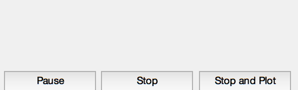
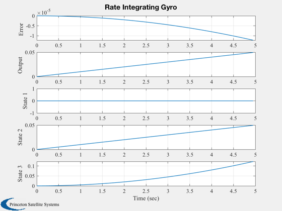
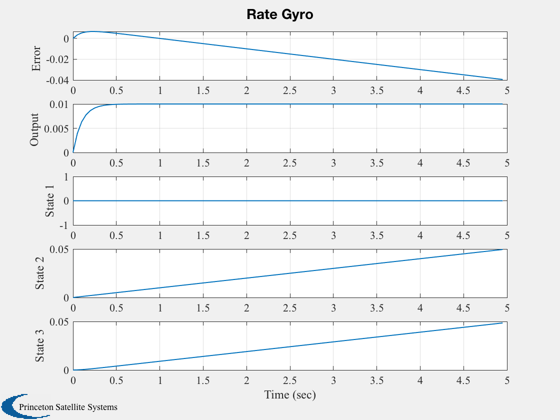

Simulate various single degree of freedom gyros.
Simulates a rate gyro and a rate integrating gyro.
Both are simulated using SDG and the RHS FSDG. They are
configured by setting the appropriate parameters.
------------------------------------------------------------------------
See also Plot2D, TimeGUI, RK4, SDG
------------------------------------------------------------------------
Contents
Global for the time GUI
global simulationAction
simulationAction = ' ';
To make a rate integrating gyro set k = cD/h and k.*kF./cD << 1
h = 1;
u = [1;0;0];
cD = 1;
kSG = cD/h;
kF = 0.0001;
bias = 0;
nU = 0;
nV = 0;
nE = 0;
[a,b,c,d] = SDG( u, h, cD, kSG, kF );
eig(a)
ans =
1.0e-04 *
-1.000000000000000
0
0
Run the simulation
dT = 0.05;
nSim = 100;
x = zeros(3,nSim);
w = [0.01;0;0];
t = dT*(0:(nSim-1));
y = zeros(1,nSim);
Initial output
[~,y(1)] = SDG( u, h, cD, kSG, kF, w, x(:,1), bias, nU, nV, nE );
Initialize the time display
[ ratioRealTime, tToGoMem ] = TimeGUI( nSim, 0, [], 0, dT, 'TGyro' );
for k = 2:nSim
[ ratioRealTime, tToGoMem ] = TimeGUI( nSim, k, tToGoMem, ratioRealTime, dT );
x(:,k) = RK4('FSDG', x(:,k-1), dT, t(k-1), u, h, cD, kSG, kF, w, bias, nU, nV, nE);
[dontCare,y(k)] = SDG( u, h, cD, kSG, kF, w, x(:,k), bias, nU, nV, nE );
switch simulationAction
case 'pause'
pause
simulationAction = ' ';
case 'stop'
return;
case 'plot'
break;
end
end
j = 1:k;
y = [y-w(1)*t;y;x];

Plotting
yLabel = ['Error ';...
'Output ';...
'State 1';...
'State 2';...
'State 3'];
Plot2D( t(j), y(:,j), 'Time (sec)',yLabel,'Rate Integrating Gyro');

To make a rate gyro set kF = h and kSG*kF/cD >> 1
h = 1;
kF = h;
cD = 1;
u = [1;0;0];
kSG = 10;
bias = 0;
nU = 0;
nV = 0;
nE = 0;
[a,b,c,d] = SDG( u, h, cD, kSG, kF );
eig(a)
ans =
-10
0
0
Run the simulation
dT = 0.05;
nSim = 100;
x = zeros(3,nSim);
w = [0.01;0;0];
t = dT*(0:(nSim-1));
y = zeros(1,nSim);
Initialize the time display
tToGoMem.lastJD = 0;
tToGoMem.lastStepsDone = 0;
tToGoMem.kAve = 0;
[ ratioRealTime, tToGoMem ] = TimeGUI( nSim, 0, tToGoMem, 0, dT, 'TGyro' );
Initial output
[dontCare,y(1)] = SDG( u, h, cD, kSG, kF, w, x(:,1), bias, nU, nV, nE );
for k = 2:nSim
[ ratioRealTime, tToGoMem ] = TimeGUI( nSim, k, tToGoMem, ratioRealTime, dT );
x(:,k) = RK4('FSDG', x(:,k-1), dT, t(k-1), u, h, cD, kSG, kF, w, bias, nU, nV, nE);
[dontCare,y(k)] = SDG( u, h, cD, kSG, kF, w, x(:,k), bias, nU, nV, nE );
switch simulationAction
case 'pause'
pause
simulationAction = ' ';
case 'stop'
return;
case 'plot'
break;
end
end
Shorten the arrays in case the user stopped the sim
j = 1:k;
y = [y-w(1)*t;y;x];
Plotting
yLabel = ['Error ';...
'Output ';...
'State 1';...
'State 2';...
'State 3'];
Plot2D( t(j), y(:,j), 'Time (sec)',yLabel,'Rate Gyro');
